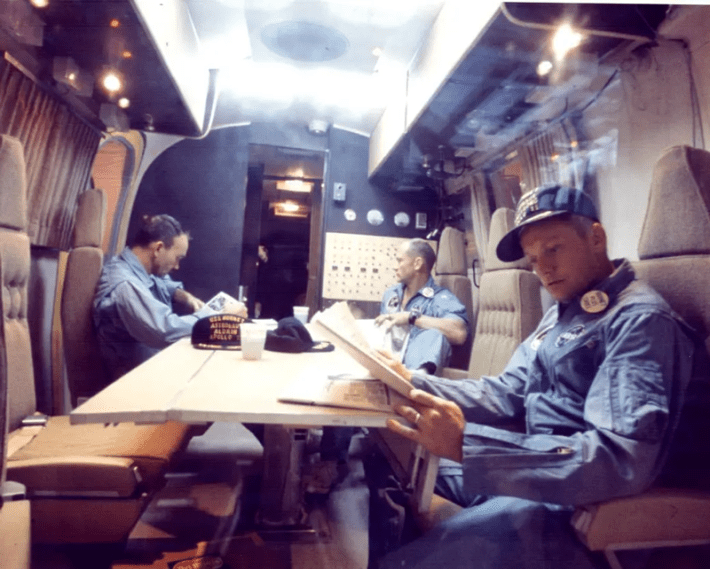

Last week, the first astronauts planning to orbit the moon in more than half a century entered quarantine ahead of their much-awaited mission, which is slated to launch as early as February 6.
The Artemis II crew is currently isolated in Houston, a measure to ensure they don’t get sick before blasting off. This is a standard NASA procedure within the agency’s health stabilization program, which has been used since the Apollo 14 mission to the moon in 1971.
It’s important to ensure astronauts are in tip-top shape so that the launch doesn’t get delayed, and to avoid symptoms cropping up during flight. In the lead-up to early Apollo missions and during flight, for example, astronauts came down with conditions including upper respiratory infections and viral gastroenteritis, but the health stabilization program led to “noticeable reduction in illness” when it was implemented in Apollo 14 and the following missions.

RELAXING IN QUARANTINE: Apollo 11 astronauts (left to right) Michael Collins, Edwin E. Aldrin Jr., and Neil A. Armstrong chill in isolation in a repurposed Airstream after returning to Earth. Photo by NASA.
Around six days before the launch, the Artemis II team will head to the Kennedy Space Center in Florida, where they’ll bunk up in the astronaut crew quarters and continue quarantining while they train for the mission. The astronauts are permitted to maintain contact with friends, family, and colleagues who follow quarantine guidelines. They’ll also wear masks, stay out of public places, and keep their distance from others.
Once the Artemis II crew returns to Earth after orbiting the moon—and potentially venturing farther in space than any previous astronauts—they’ll return home. But this wasn’t always the case: During several Apollo missions, NASA required astronauts to quarantine for three weeks after they touched back down on Earth. Equipment, lunar samples, and spacecraft were also isolated following flights.
That’s because scientists weren’t sure what sort of life may exist on the moon. They thought that astronauts might come into contact with strange lunar microbes, sparking the spread of some sort of moon-derived disease on our planet. Still, they suspected that these quarantines could probably only, at best, slow the spread of such tiny organisms while they worked on a plan to stop them in their tracks and prevent global disaster.
While the agency spent millions of dollars on a high-tech quarantine facility, which they traveled to from splash-down in a converted Airstream trailer, it “ended up being an example of planetary protection security theater,” Jordan Bimm, a historian of science at the University of Chicago, told The New York Times back in 2023.
This practice ended by the time of the Apollo 15 mission in 1971, when NASA felt confident enough that the crew’s return wouldn’t pose an existential threat to our planet.
Read more: “The Most Dangerous Job on Earth”
Nowadays, the focus has shifted to medical emergencies that can arise in space, which can prove quite stressful. Earlier this month, NASA abruptly ended a mission at the International Space Station due to a medical incident that required the use of an ultrasound onboard—the first such evacuation from the ISS. The agency didn’t offer any specific details on the astronaut’s health condition.
In addition to rigorous medical screening and quarantining before missions, NASA plans for health emergencies that arise in space. Crews receive medical training before flights, including CPR, first aid, and ways to treat decompression sickness that can result from space walks—also known as the “bends,” which affects scuba divers as well if they ascend too quickly in the water. NASA prepares crews for the event of a death onboard, too.
During Artemis II and upcoming NASA missions over the next decade, astronauts will participate in experiments to illuminate spaceflight’s impacts on human health in the long term. For example, they’ll contribute saliva and blood samples to reveal how space radiation and microgravity affect the body. Such insights are critical as we prepare for longer space missions in the future, including possible journeys to Mars—but we’ll need to start by sending people back to lunar soil. That milestone is expected during NASA’s Artemis III mission, which is slated to blast off by 2028.
Of course, the members of that crew will only be able to go for their moonwalk if they’re feeling their best. 
Enjoying Nautilus? Subscribe to our free newsletter.
Lead image: JSC / NASA